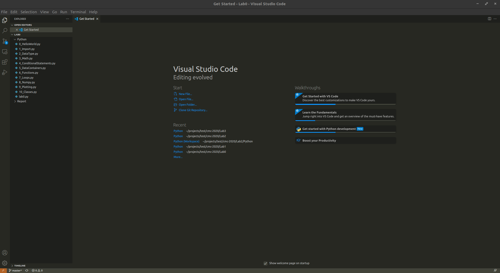
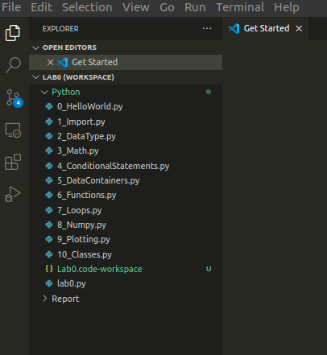
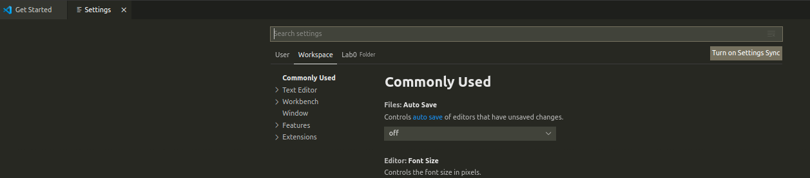
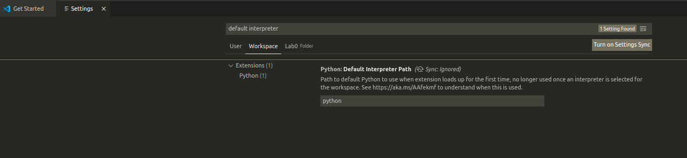
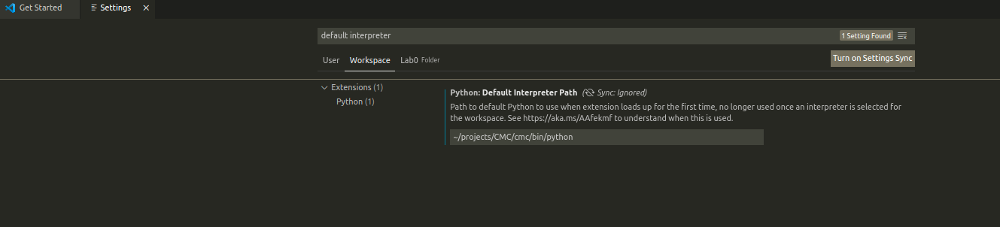

Introduction to VScode
Please go through the following resources to install and get started with VScode
Download and Install Visual Studio Code from this link
VScode official 5 min introduction video link
Vscode setup with python link
Setting up CMC labs
To begin with we recommended the following steps for working with Labs/project (workspace) for CMC:
Open vscode
Goto Files -> Open Folder
Select the folder: Navigate to the correct folder, let’s say I have my Lab0 folder at Desktop->cmc->Lab0. Select OK.
Observe VScode will show the content of the selected folder in the Explorer tab (Usually on top-left corner)

Create a workspace out of the folder by: Files -> Save Workspace as ... Observe the new file created in the Explorer window. In this case the name of the workspace is Lab0.

Setup your python environment for the lab by Going to Settings (on bottom-left corner, shortcut ctrl+,)
Select Workspace tab (right below the search bar). This will ensure that changes are local to the workspace.

Search for default interpreter, the setting options will be displayed

Change the path of the default interpreter as with your virtual environment. Use
/path/to/virtual/environments/folder/VenvName/Scripts/python.exefor Windows and/path/to/virtual/environments/folder/VenvName/bin/pythonfor linux, after making relevant changes to the path.
Observe the changes reflected in Lab0.code-workspace file.
Always use File -> open/close workspace option to allow default interpreter to be loaded at the beginning of you coding session.
Debugging Python Interpreter
Issues with default interpreter - According to VScode - “Changes to the python.defaultInterpreterPath setting are not picked up after an interpreter has already been selected for a workspace; any changes to the setting will be ignored once an initial interpreter is selected for the workspace”
Which means, the default interpreter is used when the workspace is opened for the first time in vscode window. Once the workspace is open, and you have made changes to default interpreter. Please close and open the workspace again for changes to be reflected
Make sure to always open and close workspace when working with cmc labs.
Python select interpreter method - Another way to change the current interpreter is by using the Settings -> Command Pallet -> Python:select interpreter. Note that this method does not change the default interpreter. Hence when the workspace is closed and opened again. The default interpreter will be selected. How to select interpreter
Opening VScode with specific python environment in Windows
Windows:
open command prompt
WIN+Randcmd + ENTERGo to the desired directory:
cd Path/to/course/directory/cmc-2026-studentsActivate desired environment in command prompt:
/path/to/virtual/environments/folder/VenvName/Scripts/activate.batLaunch VScode:
code